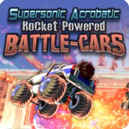

A Psyonixról röviden:

Egyéb játékaik:
Supersonic Acrobatic Rocket-Powered Battle-Cars(SARPBC):
Rocket League Elődje,Hasonlít a Rocket League-re,De csak PS3-ra jelent meg.
Kevésbé Multiplayer játék.

Rocket League Sideswipe:
A Rocket League Mobil változata,mely ugyanolyan,mint a PC-s,
csak annyi a különbség,hogy 2D-s
A Psyonix története röviden:
- 2000-ben Alapította Dave Hagewood
- Sok játékon dolgoztak más cégeknek(Gears of War, Mass Effect 3, XCOM: Enemy Unknown, Bulletstorm, Unreal Tournament III ,Unreal Tournament 2004.)
- 2008-ban kezdtek saját játékokon dolgozni(SARPBC, Monster Madness: Grave Danger)
- 2015-ben kiadták a Rocket League-t
- 2019-ben megvásárolta őket az Epic Games
A Rocket League története:
A játékot 2013-ban kezdték el készíteni,az elődje hibáinak kijavitása volt a fő cél.
Elődje hibái:
- 30FPS-ról 60FPS-re emelték a játék sebességét
- Játék könnyítése
- Online mód fejlesztése
- Dedikált online szerverek
- Több platformra készült(Microsoft Windows,PlayStation 4,Xbox One,macOS,Linux,Nintendo Switch)
- Jobb név
- Cross-platform online
- Gyakori ingyenes frissítések